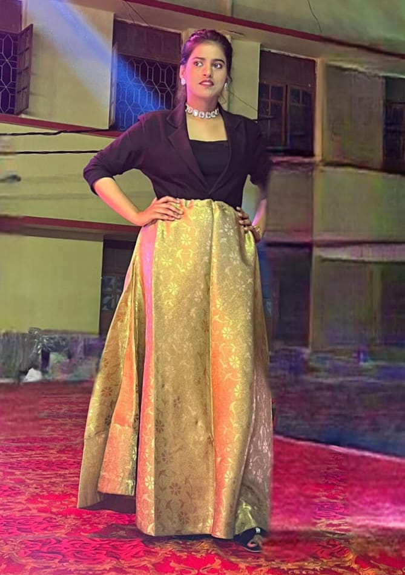
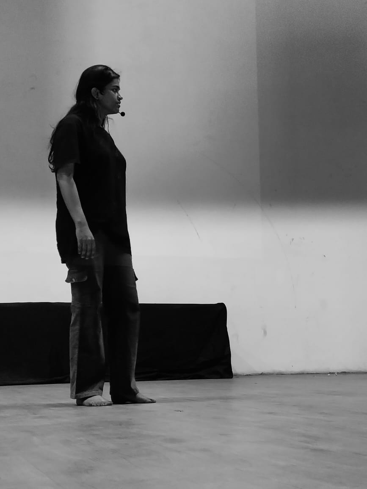
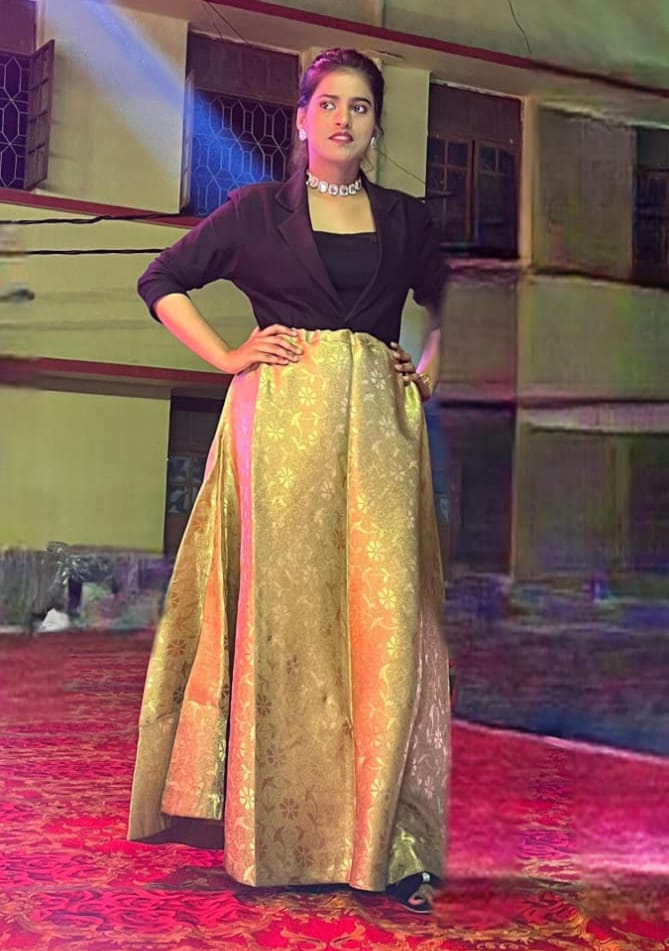
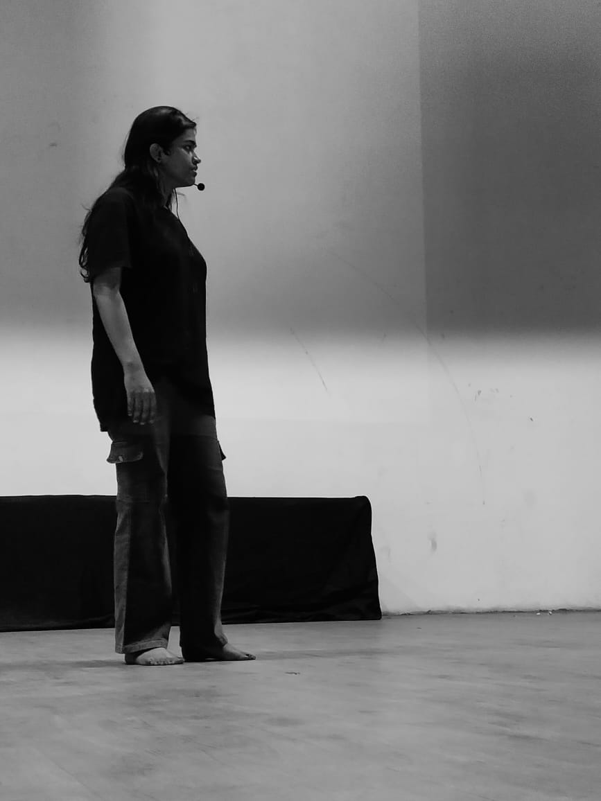

My name is Adyasha Mahapatra. I am 20 years old.
I am from Berhampur, Odisha. I completed my matriculation
from SARASWATI SISHU VIDYA MANDIR,NEELAKANTHA NAGAR,Berhampur,
and my intermediate from KHALLIKOTE JUNIOR COLLEGE,Berhampur. Currently, I am pursuing
my Bachelor of Technology degree from Veer Surendra Sai
University of Technology, Burla from the department of
Computer Science and Engineering. My hobbies are
painting,modelling,acting and listening to music. My aim is to
become a web developer.
I have interest in designing,that's why i choose web designing in my primary choice. When i was in my post intermediate
days i came acrosss web development videos in youtube,i started my web development journey from html.Now it seems very
interesting for me.I have aim to learn the advanced technology and designing in future also.I want to be jack of all trades but
master of one trade.Apart from the academic,since childhood i love to dance and also i create the hook steps of famous dance songs.
I donot confined myself in one thins,I have also joined emotica club of our college,where i started to learn some acting skils,also
get to know some new domains like scripting,video editing,story telling,memes etc. I also love photography here i am showing
some picture of it.I have interest in modelling,so i give time to excel this thing.
Qualifications:
| 2019 |
Matriculation |
| 2021 |
Intermediate |
 


